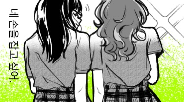

🌱
https://open.spotify.com/track/5qqabIl2vWzo9ApSC317sa?si=bfc8bdc4148845b3
I hope you accessed this website without an issue. Tho I crammed it hehe, I hope you like it.
The drawing was inspired by this manga "The Guy She Was Interested In Wasn't a Guy at All" by Sumiko Arai. I'm pretty sure you've heard of it. I think it's peak huahahaha. I drew it myself yes, hehe.
I listen to songs very, very often. I even have a playlist for whatever I'll tell you in the future hehe. Tho this song is stuck in my head, it reminded me of you.
Thank you for being my inspiration to try and keep going. You are my kewlest muse and I don't know how you drive my passion for drawing and writing go further.
You are awesome, kewl, all of my favorite dinos combined, and yes, all the good words. (This web is poorly made huhu. I am relearning how to code for HTML again. Since my knowledge for coding only revolves around HTML and Javascript along with other coding thingies.)

I drew another one, because I remember one time where we sat next to eachother? I think its the time where we were all singing cannibalismo while the guy played the guitar. I like to keep track of things and write it down from time to time because if life goes hard on me, my memories get very blurry. Its a bad habit but then again looking back and reading the things I wrote makes me a little happy, like this small moment, on how united we are as a class. I hope this school year will be good for us.
These two songs are very very catchy, I like it. I wanted to share it with you:) Despite on how awkward I am still, I swear I'm slowly slowly and almost got the momentum. I'm not avoiding you on purpose!!! I'm just hella shy. Kasi imagine, I can express how I feel like this tapos ganun kahirap irl?? Pashensha huhu.
I notice too, you really like BL huuuuuuuuuuhhh, me too. I was a hard core fujoshi back in my dark days, eme. One of my favs would prob be killing stalking, its not entirely a BL but I love the thrill. Anyway, hopefully there iz no errors kasi it took me a while to figure some codes out. Sabay gumawa kami ng pubmatt with cess and eduard. (Nakatulog ako). Enjoy this week pretty girl hehehaha goodluck sa bio!!!
(07/15/26)
Today might be a little rough for you, I don't know anyway to possibly cheer you up.. Tho I wanted to tell you that things will be fine soon. I'm not entirely sure why you were upset that time-- Tho I wanted to approach you earlier, I failed bruh. Maybe it was the grade thingy sa mabisang? If it was, its okay!! It's a pressure since its academics but pwede parin bumawi on the next terms. I'm pretty sure makakaya mo next time:) I'll try working hard also to help, I'm really bad at tagalog eh.
This drawing is rushed, but I wanted to update this on time for you to atleast reach or see. And also I won't give up on you ha.
(07/15/26)